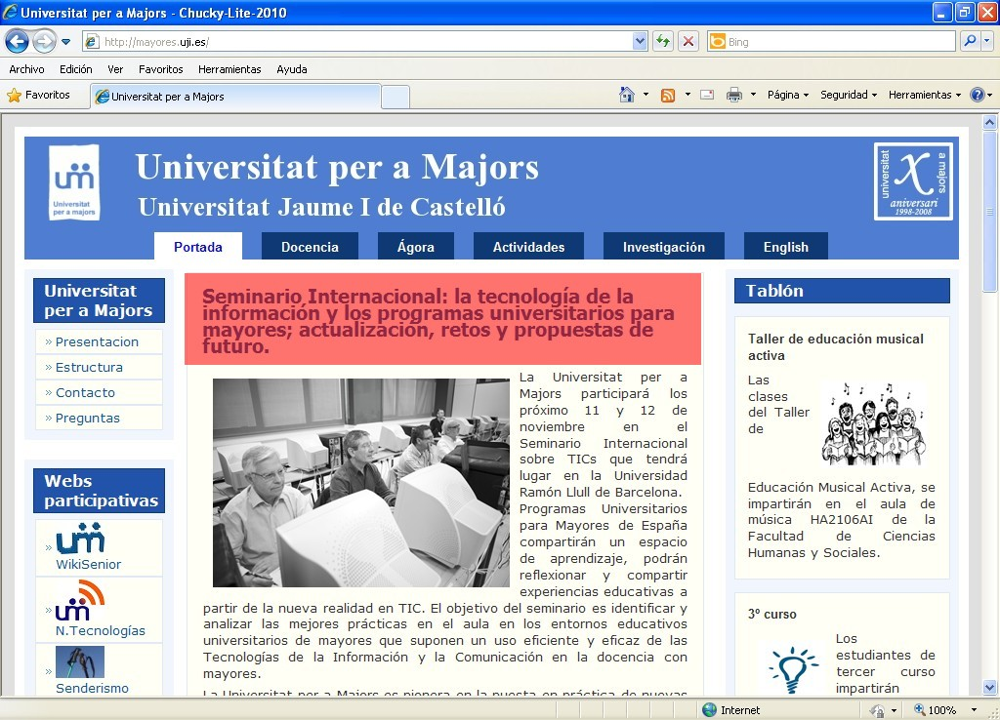
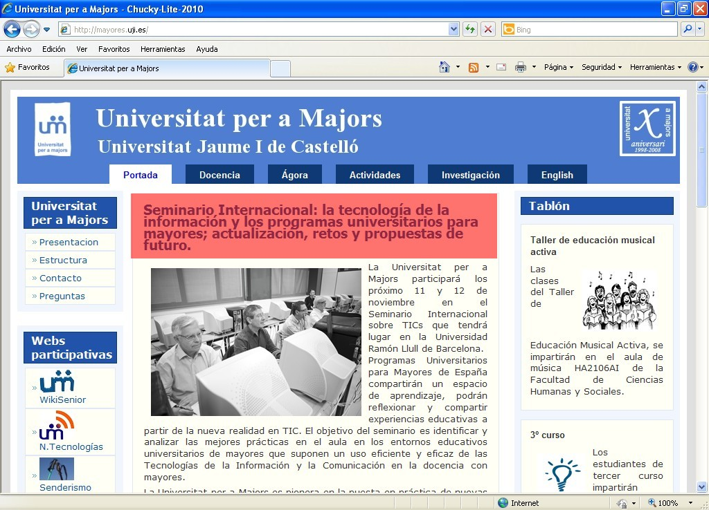

Iniciación a la informática e Internet
La WWW
Apreta la tecla → para avanzar.


La navegación marítima es el arte y la ciencia de conducir una embarcación del punto de zarpe al punto de arribo, eficientemente y con responsabilidad.
Es arte por la destreza que debe tener el navegante para sortear los peligros de la navegación, y es ciencia porque se basa en conocimientos físicos, matemáticos, oceanográficos, cartográficos, astronómicos, etc. La navegación puede ser superficial o submarina.


Cambia de foto con las teclas: ↑ y ↓
En informática, la World Wide Web, es un sistema de documentos de hipertexto o hipermedios enlazados y accesibles a través de Internet. Con un navegador web, un usuario visualiza sitios web compuestos de páginas web que pueden contener texto, imágenes, videos u otros contenidos multimedia, y navega a través de ellas usando hiperenlaces.
Una página Web, también conocida como una página de Internet, es un documento electrónico que forma parte de un sitio Web.
Su principal característica son los hipervínculos de una página, siendo esto el fundamento de la Web.
 

Cambia de foto con las teclas: ↑ y ↓

Cada web tiene su propia estructura, su información, y se navega según unos hiperenlaces que ha decidido la persona que montó la web.

¿Cómo se navega por la web? Es una técnica en apariencia sencilla que lleva mucha complejidad en su proceso.